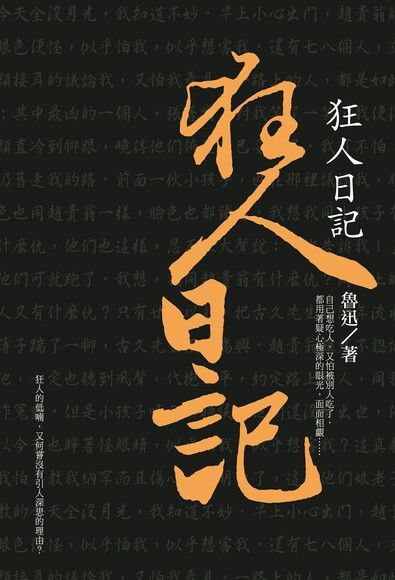
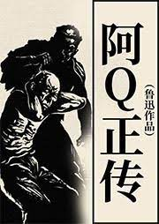
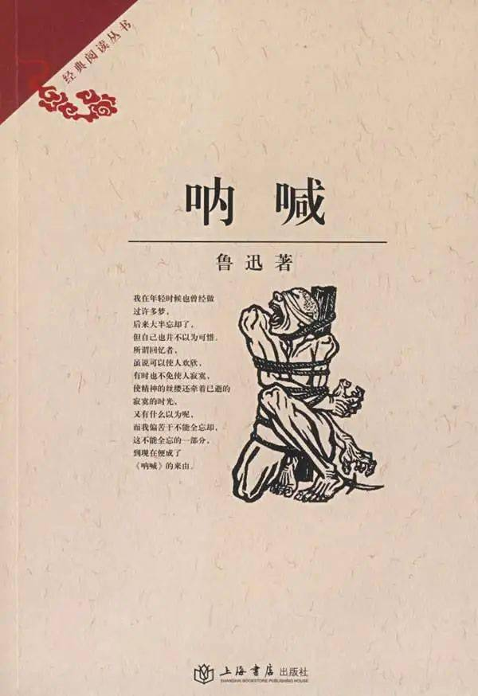
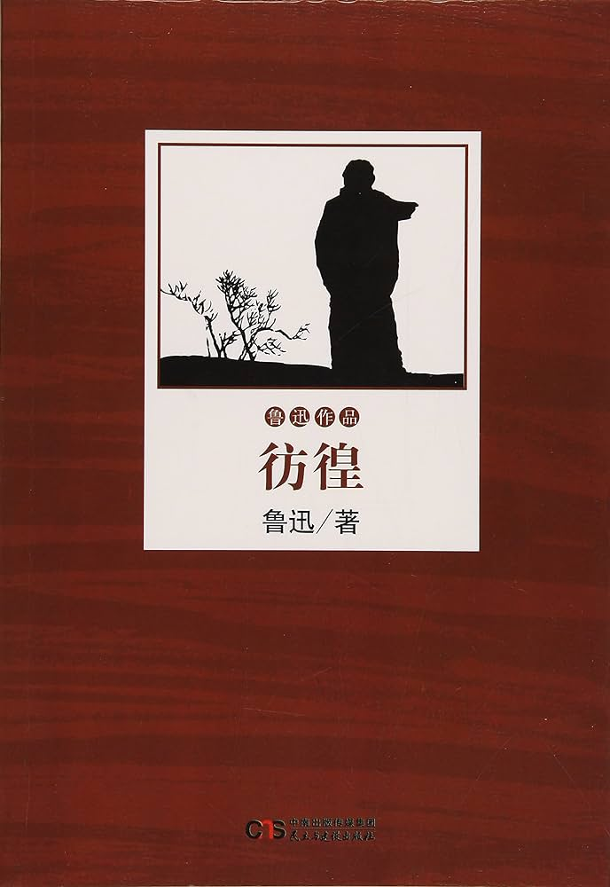

"Diary of a Madman" ( 狂人日记 ) is a pivotal work by Lu Xun, published in 1918, critiquing traditional Chinese society. It chronicles the descent into madness of its protagonist, who becomes increasingly paranoid, convinced that everyone around him is a cannibal. Through this narrative, Lu Xun explores themes of alienation, disillusionment, and the struggle against societal norms. The story serves as a powerful metaphor for the individual's battle against the oppressive structures of tradition.
"The True Story of Ah Q" ( 阿Q正传 ) is a novella written by Lu Xun and published in 1921. It's a satirical portrayal of Ah Q, a poor and uneducated peasant living in a village during the late Qing Dynasty. The novella follows Ah Q as he navigates various encounters and conflicts in the village, often resorting to boasting and self-aggrandizement to cope with his social inferiority. Despite his constant failures and humiliations, Ah Q's ability to convince himself of his own superiority remains intact. Lu Xun uses Ah Q as a symbol to criticize the societal problems of his time, including the corruption of the ruling class, the hypocrisy of Confucian values, and the passive acceptance of oppression by the common people. "The True Story of Ah Q" is celebrated for its biting satire and its incisive commentary on the human condition. It remains one of Lu Xun's most renowned works.
"Call to Arms" ( 呐喊 ), also known as "Outcry" or "Yell," is a collection of short stories by Lu Xun, published in 1923. The collection is considered a cornerstone of modern Chinese literature and a significant work in the New Culture Movement. In "Call to Arms," Lu Xun presents a series of stories that depict the harsh realities of early 20th-century China, particularly the tumultuous period leading up to the May Fourth Movement of 1919. The stories delve into various themes such as social injustice, political corruption, cultural decay, and the plight of the individual in a rapidly changing society.Through "Call to Arms," Lu Xun offers a scathing critique of traditional Chinese values and calls for a cultural and intellectual revolution to address the pressing issues facing China at the time. The collection's uncompromising portrayal of reality and its powerful social commentary solidified Lu Xun's reputation as one of China's foremost literary figures
"Panghuang" ( 彷徨 ) is a collection of short stories created by the modern literary figure Lu Xun. It was first published in August 1926 by the Beixin Bookstore in Beijing as part of the "Wu He Congshu" series compiled by the author, and later incorporated into the "Complete Works of Lu Xun". "彷徨" collects a total of 11 short stories, including "Blessing", "At the Tavern", and "The Passing", among others. The works express the author's uncompromising opposition to feudalism and serve as a mirror reflecting Chinese revolutionary thought. The collection primarily features two themes: peasants and intellectuals. The former is represented by "Blessing" and "Exposure", while the latter is exemplified by "At the Tavern" and "The Lonely". Throughout the collection, there is a pervasive sense of concern for the peasants and intellectuals who live under the heavy oppression of feudal forces, with the stories depicting their unfortunate circumstances and their lack of resistance.
